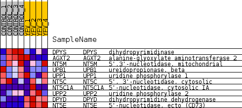
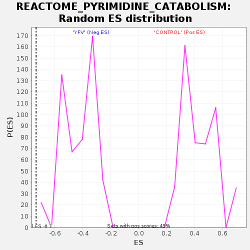

Profile of the Running ES Score & Positions of GeneSet Members on the Rank Ordered List
| Dataset | MATRIZ_GSE99081_collapsed_to_symbols.gsea_CLASE_99081.cls#CONTROL_versus_YFV |
| Phenotype | gsea_CLASE_99081.cls#CONTROL_versus_YFV |
| Upregulated in class | YFV |
| GeneSet | REACTOME_PYRIMIDINE_CATABOLISM |
| Enrichment Score (ES) | -0.7347667 |
| Normalized Enrichment Score (NES) | -1.7150835 |
| Nominal p-value | 0.0 |
| FDR q-value | 0.029999468 |
| FWER p-Value | 0.416 |
| SYMBOL | TITLE | RANK IN GENE LIST | RANK METRIC SCORE | RUNNING ES | CORE ENRICHMENT | |
|---|---|---|---|---|---|---|
| 1 | DPYS | dihydropyrimidinase | 2566 | 0.402 | -0.0928 | No |
| 2 | AGXT2 | alanine-glyoxylate aminotransferase 2 | 3220 | 0.318 | -0.0815 | No |
| 3 | NT5M | 5',3'-nucleotidase, mitochondrial | 4384 | 0.213 | -0.1186 | No |
| 4 | UPB1 | ureidopropionase, beta | 4869 | 0.169 | -0.1210 | No |
| 5 | UPP1 | uridine phosphorylase 1 | 5861 | 0.087 | -0.1679 | No |
| 6 | NT5C | 5', 3'-nucleotidase, cytosolic | 6316 | 0.051 | -0.1875 | No |
| 7 | NT5C1A | 5'-nucleotidase, cytosolic IA | 10376 | -0.050 | -0.4296 | No |
| 8 | UPP2 | uridine phosphorylase 2 | 12664 | -0.261 | -0.5282 | Yes |
| 9 | DPYD | dihydropyrimidine dehydrogenase | 16018 | -1.667 | -0.4644 | Yes |
| 10 | NT5E | 5'-nucleotidase, ecto (CD73) | 16167 | -2.946 | 0.0044 | Yes |

